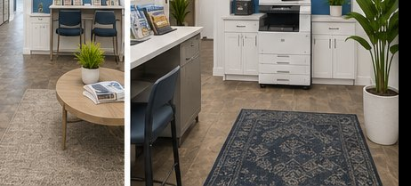
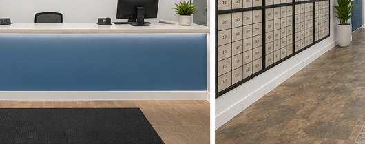
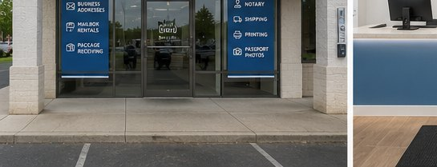

Stafford, Sugar Land, Missouri City
Letter Connection
Your business address starts here. Private mailboxes, package receiving, shipping, notary, printing, and document support in Stafford.
- Address
- 435 Murphy Rd Ste B-1
- Area
- Stafford, Sugar Land, Missouri City
- Best for
- business addresses, packages, document services
Real street address
Mailbox rentals built for privacy, packages, and business credibility.
Get a Stafford mailing address without using your home address. We receive mail and packages, help with everyday document needs, and give local businesses one dependable counter for the work around the work.
Why people use us
A real street address and a person who can receive the package.
The best mail centers do more than rent a box. They protect your home address, receive packages, keep your business reachable, and save a trip when you need a label, copy, scan, notary, or packing help.
Letter Connection is being rebuilt around a simple promise: clean service, clear communication, and practical support for people who run their lives and businesses on the move.
Private mailbox rentals
A better address for home businesses, travelers, and privacy.
Use a real Stafford street address, receive packages, and keep personal mail separate from your front porch or home office.


Business mailbox
Use a professional street address for vendors, online profiles, records, and customer-facing materials.
Package receiving
Have packages delivered to the store instead of waiting at home or risking porch theft.
Mail holding and forwarding
Ask about hold, forwarding, and pickup options that fit your travel or business schedule.
Customer file cleanup
Existing customers can renew, update phone/email details, and complete required mailbox paperwork in store.
Start here
Opening a mailbox should feel simple, not like another errand.
Call first if you want to confirm box availability. Then visit the store with ID and the names you want authorized to receive mail.
Choose the right mailbox
Tell us whether you need personal mail, a business address, package receiving, or travel support.
Bring your ID
Bring a valid government photo ID. Business customers should bring the business name and authorized recipients.
Use your new address
Use the store address with your box number for mail and ask about package, hold, and forwarding options.
Services
One counter for the errands that slow your day down.
Mailbox rentals
Private mailboxes, business addresses, package receiving, renewals, and customer record updates.
Packing support
Boxes, tape, packing material, and help preparing fragile or awkward items for carrier pickup.
Shipping help
Carrier options, prepaid drop-offs, packing supplies, and practical help preparing shipments.
Print, copy, scan
Everyday copies, scans, forms, and print jobs. Call ahead for large or specialty jobs.
Fax and document help
Fax, forms, notary availability, and document prep for personal and business errands.
Small business support
Address, mail handling, package pickup, forms, copies, and practical counter help for local operators.

For local businesses
Keep your address stable while your work stays mobile.
If you run a home business, side business, mobile service, consulting practice, or online shop, a private mailbox gives you a stable place for mail and packages without putting your home address everywhere.
- Use a Stafford street address for business mail.
- Separate personal and business deliveries.
- Pick up mail and packages on your schedule.
- Ask about forwarding, holding, and package handling.
Address options
A private mailbox sits between a PO Box and a virtual office.
For many customers, the real value is not just the box. It is having a staffed local counter that can receive mail, handle packages, and help with documents.
Need
PO Box
Virtual office
Letter Connection
Real street-style mailing address
Limited
Usually
Yes
Staffed package receiving
USPS-focused
Plan-dependent
Local counter support
Copies, scans, forms, notary questions
Separate trip
Usually separate
Same store
Someone local to call
Branch-dependent
Often call-center based
Yes
Built to compete locally
National-chain convenience with neighborhood accountability.
Clear service status
Call before specialty services so you do not waste a trip while upgrades are being completed.
Mailbox-first focus
Mailbox customers are not an add-on. They are the core of the store and the first system being cleaned up.
Local ownership
Decisions, upgrades, and customer service happen at the store level, not through a distant call center.
What do you need today?
Three common reasons to call or walk in.
I need a mailbox
Ask about current box availability, required ID, business names, and package receiving.
Call about mailboxesI need to print or scan
Email the file first or bring it in. Call ahead for large jobs, finishing, or urgent deadlines.
Email a print requestI need to ship or drop off
Bring prepaid labels or call first for carrier label questions, packing support, and service availability.
Call before shippingQuick answers
Mailbox and service questions.
Can I use this address for my business?
You can use a private mailbox as a real Stafford mailing address. Some banks, government forms, marketplaces, and licensing agencies have their own rules, so confirm the requirement for your specific use.
What should I bring to open a mailbox?
Bring valid government photo ID and the names of anyone authorized to receive mail. Business customers should also bring the business name and any alternate recipient names.
Can you receive packages for me?
Ask about package receiving when you open or renew your mailbox. Package rules can depend on carrier, package size, account status, and storage needs.
Do you offer shipping labels, fax, notary, and passport photos?
Call before coming in for specialty services, carrier labels, fax, notary, passport photos, or large print jobs. We will confirm what is available that day.
Visit Letter Connection
435 Murphy Rd Ste B-1, Stafford, TX 77477
Serving Stafford, Sugar Land, Missouri City, Meadows Place, and nearby Houston-area customers who need mailboxes, package receiving, packing, and document support.